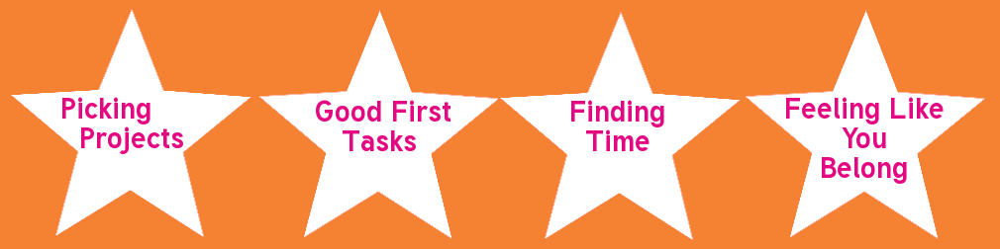

About Me
developer, organizer, researcher
Open Source Comes to Campus
Fifty+ campus events


Lots of volunteers
Lots of enthusiasm
Lots of obstacles
This talk is for newcomers and oldtimers.
It has four parts.
Picking a Project
Picking a Project
Step 1: Know Thyself
Newcomers
- Why do you want to contribute to open source projects?
- What kind of tasks do you know you enjoy?
- What skills do you already have? Which do you want to learn?
- What kind of commitment can you make?
- What kind of communities sound appealing to you?
Use your answers to guide your search.
Share your knowledge
"I'm pretty new to Django (just went through the tutorial) and am looking for a Django project to contribute to. I want to see how it works in the real world!"
"It's spring break for me now, so I can do a lot this week, but after that I'll only be available for an hour or two a week until summer."
"I'm a visual learner. Is there any documentation I could add illustrations to?"
Maintainers
- What kind of community do you want to build? Big and bustling? Tight-knit?
Rough and tumble? Diverse? - How much time and energy can you give to mentoring and community building?
- What are your weaknesses and strengths as a mentor?
- What are your weaknesses and strengths as a community?
Share your knowledge
- Conversations with newcomers.
- Documentation.
- Publicity.
An example from Open edX
It's okay to have preferences.
(It doesn't make you picky or ungrateful.)
Picking a Project
Step 1: Know Thyself
Step 2: Evaluating Projects
Activity
Responsiveness
Culture
Newcomers: look for these.
Maintainers: keep track of these.
Activity
How often do issues get reported?When was the last commit get merged?
How busy is the IRC channel and mailing list?
Very Active: Django
- as many as a dozen commits a day
- dozens of open pull requests
- over a thousand open tickets
- 500+ people on the IRC channel
Modestly Active: Django-braces
Inactive: Django-tagging
Rules of thumb:
Responsiveness
Do community members respond to bug reports?Do maintainers give feedback on pull requests when they need changes, or just let them sit there?
When someone asks for help on IRC, do people respond?
An example from SciPy
Culture
How are users with questions treated?How are other newcomers treated?
Does the community have a Code of Conduct?
An example from Khmer
Another example from OpenHatch (aka us)
And the Linux kernel!
Good First Tasks
Good First Tasks
Option 1: Mentored Tasks
Mentored Tasks

Tag/look for issues labelled "mentored".
Pairing
- Can be done in person (at meetups, sprints, etc) or remotely (with screensharing).
- Can be a mentoring pair (experienced person + newcomer) or a peer pair.
- Is pretty much the best:
But you don't have to pair.
You can also help asynchronously via email, IRC, and comments on the issue tracker. Just having a specific person to ask questions of is very helpful.
Good First Tasks
Option 1: Mentored Tasks
Option 2: Newcomer Tasks
Newcomer Tasks

There are certain things that newcomers can do better than anyone else.
Storytime

Obstacles, in their own words:
"lots of downloads, need an approved account to have access… had to create own database on localhost… tears clouding vision"
A happy ending, thanks to Privly:
Setup Sprints
for setup instructions
- Two or more people, at least one newcomers and one maintainer.
- Newcomer goes through setup guide in real time.
- Unearths confusing language, missing steps, unknown dependencies.
- The newer and less experienced the newcomer, the more gaps they'll find!
Uncover hidden dependencies, assumptions about contributor knowledge, confusing download isntructions, and more!
See also collected wisdom in our handbook.
Think Alouds
for user testing
- (Need to use videochat or be in person for this one!)
- Maintainer gives the newcomer a goal or task.
- Newcomer speaks their thoughts as they try to accomplish the task.
- Maintainer can prompt them with, "What are you thinking?" and clarifying questions.
Other newcomer-friendly types of tasks
- Making project websites more accessible to screen-readers
- Reproducing bugs in the issue tracker
Maintainers: list these tasks in your contributing guides!
Newcomers: ask if they need doing, even if they aren't listed!
Good First Tasks
Option 1: Mentored Tasks
Option 2: Newcomer Tasks
Option 3: Bitesize Tasks
Bitesize Tasks
What Does The Task Say?
- skills needed and tools needed
- links to relevant documentation
- where to make the change (or how to figure out where to make the change)
- what community members can help/give feedback
Maintainers: provide this information!
Newcomers: if you're stuck, try asking about this info!
Example: OpenHatch

Finding Time
Get support
Students, ask professors about getting credit for open source work.
Figure out what works for you
Want to contribute here and there? Find a project with short, discrete tasks and/or low activity.
Want to contribute in short bursts? Attend project nights, hackathons, and sprints.
Have a few months free? Find a project that has internships.
Be explicit about your limitations
"If I haven't commented on your pull request by the weekend, poke me!"
"I'm super busy this week, but I'll work more on this issue next week."
Maintainers, multiply your efforts
Help newcomers help other newcomers.
Feeling Like You Belong
Impostor Syndrome
aka feeling like a fraud
See Julie Pagano's excellent talk from last year's PyCon.
Newcomers
You're not alone! And you do belong.
Focus on values:
Maintainers
Check out the Recurse Center (Hacker School) Social Rules:
- No feigning surprise
- No well-actually's
- No back-seat driving
- No subtle -isms
You don't have to know everything! Embrace your inner newcomer.
Let others see you struggle, and learn from it.
Takeaways
- Explicit is better than implicit.
- Having preferences is preferable.
- Confusion and frustration are natural.
- Confusion and frustration lead to great learning experiences.
What's next?
Newcomer Workshop this Sunday!
(*must register*) Come by the OpenHatch booth! We'll be eating lunch near there today - join us. :)OpenHatch: Main website, Open Source Comes to Campus, MergeStories,
WelcomeBot, Twitter: @openhatch, #openhatch on Freenode
Me: shaunagm@gmail.com, @shauna_gm
Thanks
The OpenHatch community, especially Carol Willing, Asheesh Laroia and Jessica McKellar
Boston Python User Group, especially Ned Batchelder
Elena Williams, for her talk on open source last year
Example projects: Open edX, Django, Django-braces, Django-tagging, SciPy
Khmer, Linux Kernel, Privly, Pyramid, Pandas
You!
Images (in order)
"The New Fred Meyer on Interstate on Lombard" by Lyza CC BY SA 2.0https://www.flickr.com/photos/lyza/49545547/
"Start" by Steven Depolo CC BY 2.0
https://www.flickr.com/photos/stevendepolo/5749192025
"Con capa sobre La riñonera" by MaloMalverde CC BY SA 2.0
https://www.flickr.com/photos/malomalverde/8598030211
"All Together Now" by Pete CC BY 2.0
https://www.flickr.com/photos/comedynose/7197462676
"Group Hug" by Crystal CC BY 2.0
https://www.flickr.com/photos/jorislouwes/6904269921
What's next?
Newcomer Workshop this Sunday!
(*must register*) Come by the OpenHatch booth! We'll be eating lunch near there today - join us. :)OpenHatch: Main website, Open Source Comes to Campus, MergeStories,
WelcomeBot, Twitter: @openhatch, #openhatch on Freenode
Me: shaunagm@gmail.com, @shauna_gm